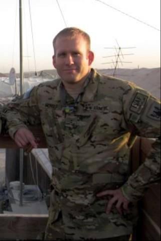
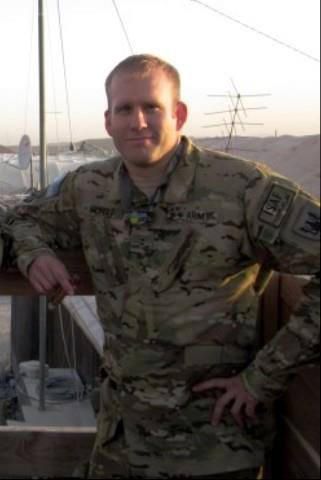

Bryan J. Nichols
Army Chief Warrant Officer 2
United States Army
October 16, 1979 - August 6, 2011
Laid to rest at Pleasantview Cemetery in Palco, Kansas
Video Tribute
Biography
CW2 Bryan Joseph Nichols, 31, died August 6, 2011 near Combat Outpost Sayed Abad, Afghanistan due to hostile enemy action. Bryan was born October 16, 1979 in Hays, the son of Douglas and Cynthia (Karlin) Nichols. On October 7, 2006 he married Mary Hammerbacher in Frontenac, Kansas. Bryan was a 1998 graduate of TMP-Marian High School in Hays and enlisted in the in 1996. He was deployed twice in Iraq, once in 2002 and again in 2003, and once in Kosovo in 2004. He graduated flight school in 2008 and was a Chief Warrant Officer with the 7th Battalion, 158th Aviation Regiment (General Support Aviation Battalion).
A week ago, 10-year-old Braydon Nichols started to think about his dad and how much he missed him. Army Chief Warrant Officer Bryan Nichols, a helicopter pilot, had been deployed for two months in Afghanistan. The little boy, in the car with his mother running errands, brushed back his dirty-blond hair and ran his hand over his cheek. Jessica Nichols looked over when she heard sniffles. Her son was crying. "When is Dad coming back so we go camping?" he asked her. Soon, she assured him. "Your dad is off fighting for this country." The boy replied, "As soon as he gets home, we're going to go on a camping trip, just me and him."
Jessica Nichols cannot stop replaying that scene in her mind. That's because only a few days later, on Saturday night, she was cradling her boy who was crying once again. Except this time she could not tell him that his father was coming home. She had just received a call informing her that Bryan Nichols was one of the 30 Americans who died that afternoon when their Chinook helicopter was shot down in Wardak province in east-central Afghanistan. "It was just so devastating that a week ago or so Braydon had that worried look on his face, thinking about his dad," she said. "Braydon and Bryan were so connected. Braydon was like a little version of his dad." "He always wanted to be in the Army," she said. "He came across the Chinook and was so fascinated. His father flew Chinooks."
Bryan Nichols did three deployments during their marriage. It proved to be too much for their relationship, she said. They divorced when Braydon was 3, but remained close to raise Braydon. Bryan remarried, and his new wife and Jessica all got along. They all loved and cared for Braydon, she said. It was Bryan's wife, Mary, who contacted Jessica Saturday night to say that Bryan had died. "She was screaming," Jessica said. "She was screaming that Bryan was dead." Jessica couldn't believe what she was hearing. She hung up. Her heart was beating hard. Braydon was in his room, still awake and playing. Jessica walked toward the room, and stood by his door for a moment, overcome with grief. "I went to my room and tried to figure out what was going on," she said. Jessica pulled herself together as best she could and phoned her brother who lives nearby. He came to her house to support her. Together, they called Braydon downstairs. In his pajamas, Braydon stood in front of his mother and uncle. "I said, 'Braydon, do you know much your dad loves you? Do you know how proud of you he is?" Before she could say anything more, the boy wilted in her arms, sobbing. "I said, 'I'm sorry ... your ... dad died."
Military Service
Bryan Nichols was born on October 16, 1979, in Hays, Kansas. He enlisted in the U.S. Army Reserve on December 1, 1996, and went on active duty to begin basic training on December 16, 1996. Pvt Nichols completed basic training at Fort Leonard Wood, Missouri, in March 1997, and Advanced Individual Training as a Medical Supply Specialist at Fort Sam Houston, Texas, in August 1998. He served with Detachment 2 of the 388th Medical Logistics Battalion at Hays, Kansas, from December 1996 to January 2006, and then attended Warrant Officer Candidate School from January 2, 2006, until he was appointed a Warrant Officer in the U.S. Army Reserve on March 1, 2006. WO Nichols attended Rotary-Wing Aviator training and CH-47 Chinook transition training from December 2006 to June 2008. He was assigned as a CH-47 pilot with Company B, 7th Battalion of the 158th Aviation Regiment at New Century, Kansas, in April 2006, until he was killed in action in Afghanistan on August 6, 2011. During this time, CW2 Nichols deployed with his unit to Qatar from February to August 2002, to Kuwait from March to May 2003, to Iraq in support of Operation Iraqi Freedom from May to July 2003, to Germany in July 2004 and again from October to November 2004, to Bosnia Herzegovina from July 2004 to February 2005, and to Afghanistan in support of Operation Enduring Freedom from May 2011 until his death on August 6. Bryan Nichols was buried at the Pleasantview Cemetery in Palco, Kansas.
- Taken from Veteran Tributes
His Bronze Star Medal Citation reads:
For meritorious service from 13 May 2011 to 6 August 2011, while assigned to Company B, 7th Battalion, 158th Aviation Regiment, during Operation Enduring Freedom. Chief Warrant Officer Two Nichols' commitment contributed to our Nation's continual war on terrorism and his actions represented his dedication to the security of the United States of America. His sincere desire to bring peace and stability to a foreign nation is an example of what all American Soldiers strive to achieve. No greater honor can be demonstrated by his ultimate sacrifice, and he will be forever remembered for his actions. Chief Warrant Officer Two Nichols' duty performance and selfless service are in keeping with the highest traditions of military service and reflect great credit upon himself, the United States Forces - Afghanistan, and the United States Army.
Awards & Decorations
[List military awards and decorations earned, such as:]
• Purple Heart
• Bronze Star Medal
• Combat Action Badge/Ribbon
• [Additional awards]